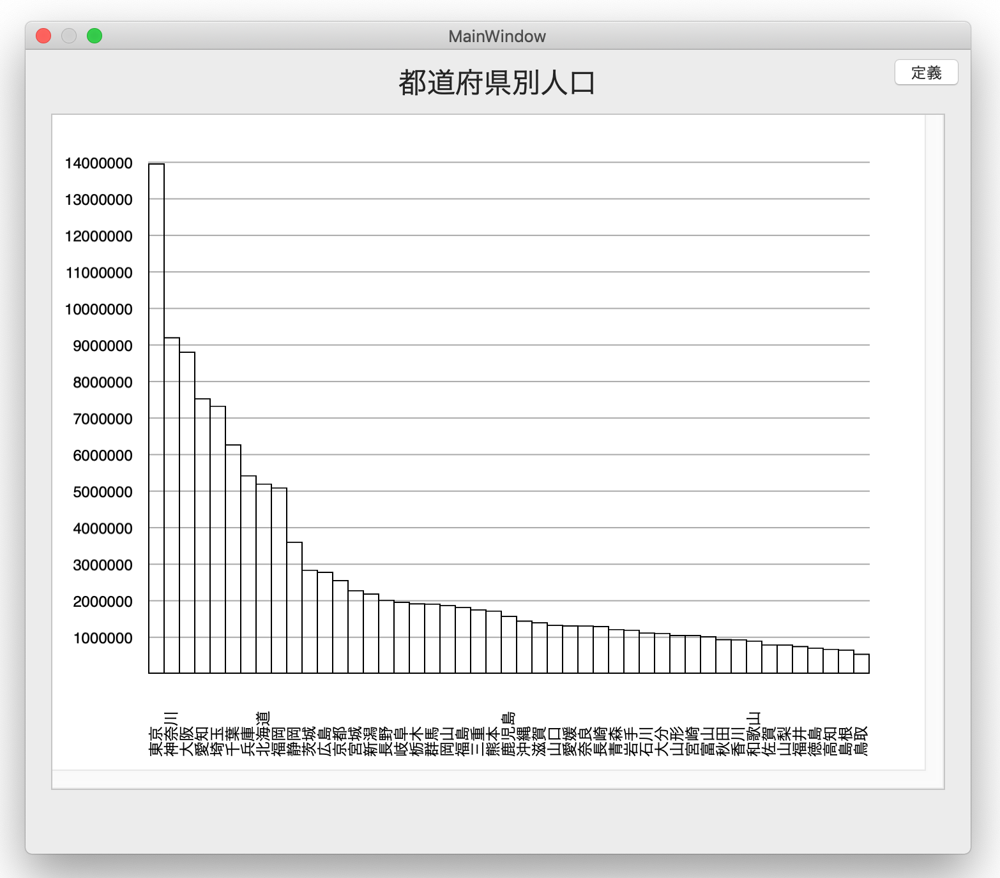
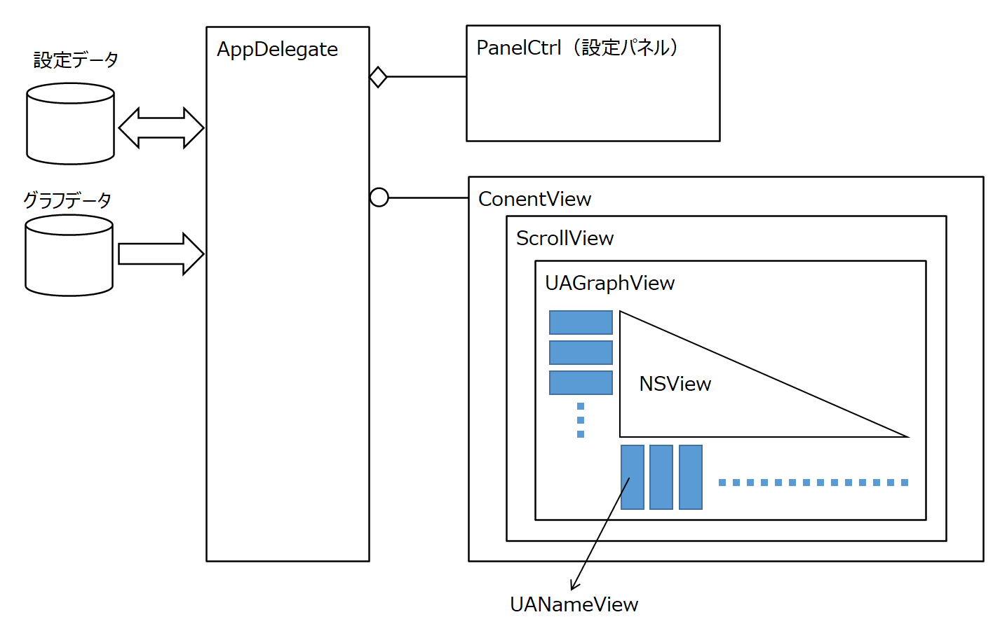

<!-- -->
<DOCTYPE HTML>
<html id="mainhtml">
<head>
  <meta http-equiv="Content-Type" content="text/html; charset=utf-8">
  <title>簡単な棒グラフを作成する</title>
    <link rel="stylesheet" type="text/css" href="/lib/document.css">
</head>
<body id="mainbody">
<!-- ↓↓↓↓↓↓↓↓↓↓↓ -->
<script type="text/javascript" src="/lib/funcs2.js"></script>
<!-- ↑↑↑↑↑↑↑↑↑↑ -->
<!--div class="lm100 tm0" style="width:550px; border-top:solid 1px #909090;"></div -->
<div id="content">
<h2 class="lm70 tm20 bm0">
簡単な棒グラフを作成する
</h2>
<!-- 画像 -->
<a href="/lib/HTMLofVideo.html?filename=/data/B62/makeGraph.mp4&title=makeGraph&width=700" target="_new">
</a>
<div class="lm100 tm5 rm60 font90">
画像をクリックすると動画になります。
</div>
<h3 class="lm70 tm20 bm0">
クラス関連図
</h3>
<!-- 画像 -->
<a href="/lib/HTMLofImage.html?filename=/data/B62/makeGraph2.png&title=makeGraph2&width=750" target="_new">
</a>

<h3 class="lm70 tm20 bm0">
ソースコード
</h3>

<!--ソースコードリンク-->
<div class="lm70 tm5 rm60">
<a href="/lib/HTMLofText.html?filename=/data/B62/source/AppDelegate.swift&title=AppDelegate" target="_new">AppDelegate.swift</a>　
</div>
<div class="lm70 tm5 rm60">
<a href="/lib/HTMLofText.html?filename=/data/B62/source/UAGraphView.swift&title=UAGraphView" target="_new">UAGraphView.swift</a>
</div>
<div class="lm70 tm5 rm60">
<a href="/lib/HTMLofText.html?filename=/data/B62/source/UANameView.swift&title=UANameView" target="_new">UANameView.swift</a>
</div>
<div class="lm70 tm5 rm60">
<a href="/lib/HTMLofText.html?filename=/data/B62/source/PanelCtrl.swift&title=PanelCtrl" target="_new">PanelCtrl.swift</a>
</div>
<div class="lm70 tm5 rm60">
<a href="/lib/HTMLofText.html?filename=/data/B62/source/NSBezierPathExtension.swift&title=NSBezierPathExtension" target="_new">NSBezierPathExtension.swift</a>
</div>


<div class="bp40"></div> <!-- 空白行 -->
<!----------------------------------------------->
</div><!-- end of content -->
<footer id="mainfooter">
<div class="tp10 bm10 bp10 textright"> <span class="rm500 font80"><a href="/lib/index2.html">メニューに戻る</a></span><span class="rm20 font80"><a href="#mainheader">TOPに戻る</a></span></div>
</footer>
<script type="text/javascript" src="/lib/access/access2.js"></script>
</body>
</html>


